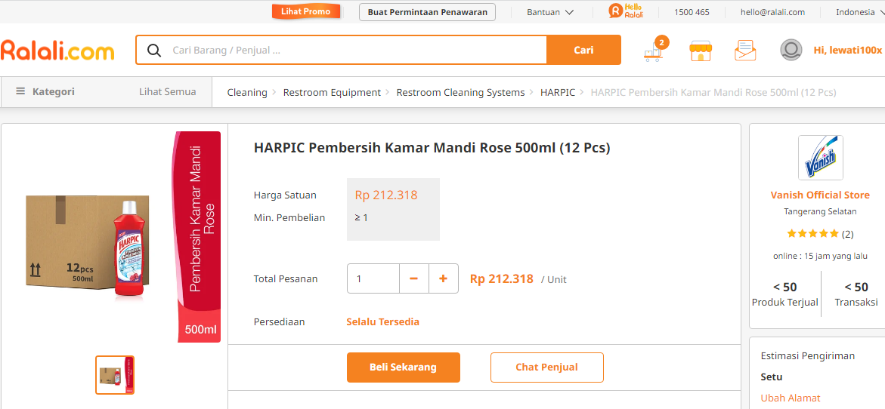
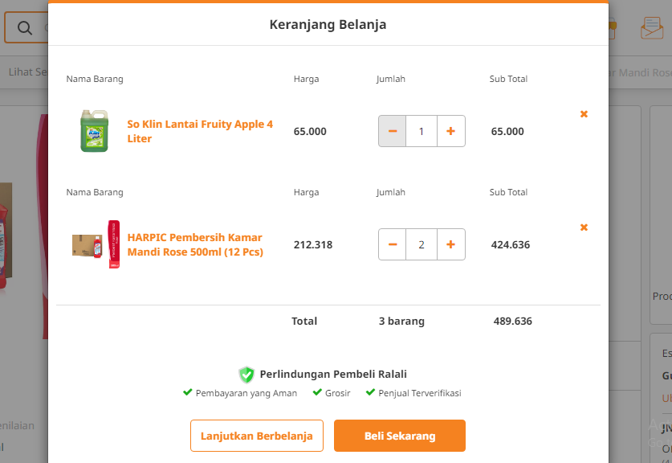
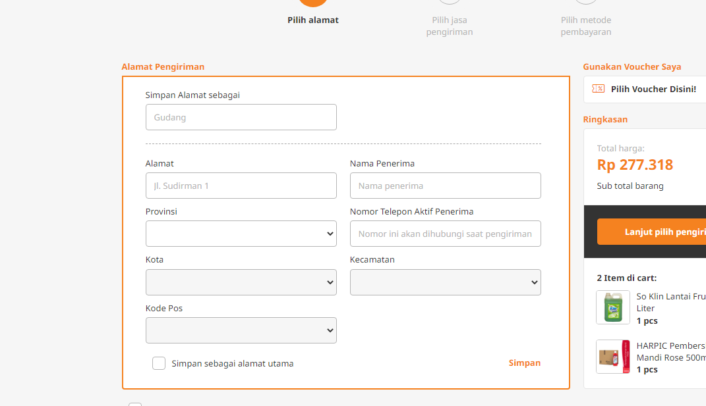
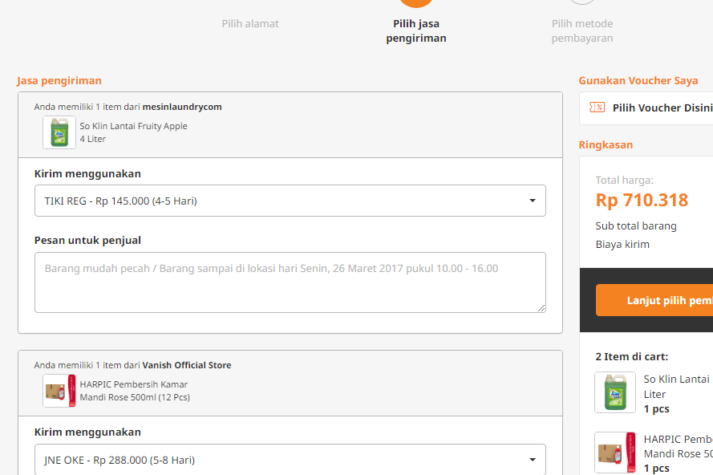
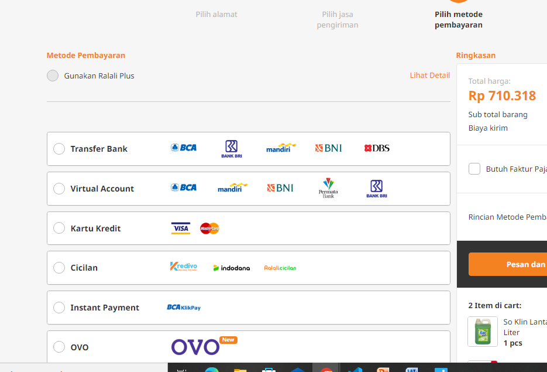
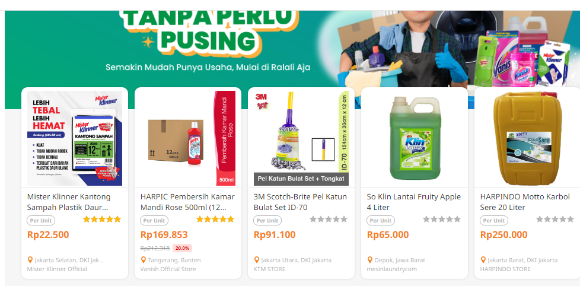

Salah satu situs yang termasuk kategori B2B adalah ralali.com
Ralali merupakan marketplace B2B (business to business) yang bisa menghubungkan pemasok produk dan pelaku bisnis melalui situs online maupun aplikasi mobile. Berdiri sejak tahun 2013, Ralali.com adalah Online B2B Marketplace yang memberikan kemudahan proses transaksi jual-beli melalui teknologi dan fitur yang dapat membantu Seller dan Buyer melakukan proses bisnis lebih mudah, aman, dan transparan. Ralali menghubungkan pembeli, baik korporat maupun individu, dalam menemukan ribuan produk untuk kebutuhan bisnis dan perusahaan dari ratusan supplier ternama dan terpercaya..
Pada mulanya Ralali fokus menjual produk Industri yang terdiri dari produk maintenance, repair, and operations (MRO). Setelah tahun 2015, Ralali mulai memperluas kategori produk hingga ke produk industri kesehatan, peralatan usaha restoran, fashion & kecantikan, Horeca, dan 8 kategori lainnya. Pada tahun 2017, Ralali mengeluarkan fitur baru bernama 'RFQ' yang digunakan untuk memfasilitasi permintaan produk bisnis yang tidak umum dan tidak tersedia di situs/aplikasi Ralali. Saat ini Ralali telah memiliki memiliki 11.000 supplier tepercaya, 135 ribu pelanggan, 250 ribu produk, dan 2 juta pengunjung situs per bulan.
Saat ini Ralali sudah memiliki fitur bernama Business Innovation Group (BIG) yang bertujuan untuk mempermudah pencarian barang di dalam marketplace mereka. Pada fitur BIG ini, telah dikelompokkan produk dan segala kebutuhan berdasarkan usaha yang dijalankan. Saat ini terdapat lima kategori BIG, yaitu BIG Auto (bisnis bidang otomotif), BIG Home (bisnis bidang kontraktor bangunan, arsitektur, interior, dan material bangunan), BIG Market (bisnis bidang elektronik, Maintenance Repair & Operation, mode dan kecantikan), BIG Office (dukungan kebutuhan peralatan kantor), dan BIG Resto (bisnis bidang perhotelan, restoran, katering, dan seputar kuliner). Pada akhir tahun 2018, Ralali meluncurkan BIG Agent yang merupakan aplikasi yang dapat menghubungkan masyarakat ke berbagai macam pekerjaan sampingan untuk mendapatkan penghasilan tambahan.
Mekanisme Jual Beli dan Pembayaran pada situs ralali.com
1. Pilih produk dan toko yang diinginkan

Untuk menemukan produk yang Anda cari, ada 2 cara yang bisa Anda lakukan, yaitu:
Pertama, ketik nama produk pada kolom pencarian, atau klik kategori dan sub kategori yang ada di ralali.com
Setelah menemukan produk yang Anda mau, klik gambar produk tersebut atau klik icon detail pada produk untuk melihat informasi lengkap tentang produk dan toko yang menjual produk tersebut. Klik “Beli” pada produk yang kamu ingin
beli.
Kedua, Anda juga dapat mendapatkan penawaran spesial dari toko terkait dengan klik “Hubungi Penjual”
2. Masukkan ke keranjang belanja dan lakukan checkout

Setelah klik "Beli" akan muncul pop up keranjang belanja, disini Anda bisa menentukan jumlah produk yang akan dibeli pada pop up tersebut. Klik “Checkout” untuk melanjutkan proses checkout. Atau klik "Lanjut Belanja" jika Anda
ingin mencari produk kembali. Klik pada icon "keranjang belanja" untuk memastikan seluruh produk yang Anda pilih sudah masuk pada keranjang belanja Anda.
Pada halaman checkout Anda harus mengisi informasi mengenai alamat pengiriman, jasa pengiriman dan metode pembayaran.
a. Pilih Alamat Pengiriman

Jika Anda sudah memiliki data alamat pengiriman, Anda bisa langsung memilih alamat tersebut. Namun, jika Anda belum memiliki atau ingin menambahkan alamat pengiriman yang baru, maka Klik “Tambah Alamat” kemudian isi form dan
simpan alamat tersebut.
b. Pilih Jasa Pengiriman

Klik “Lanjut Pilih Pengiriman” lalu pilih Jasa Pengiriman yang Anda ingin gunakan untuk mengirimkan barang pesanan Anda. Pada halaman ini Anda bisa memberikan Pesan untuk Penjual mengenai detail barang yang Anda pesan. Klik
“Pilih Pembayaran” untuk melanjutkan.
c. Pilih Metode Pembayaran yang Anda Inginkan

Anda dapat memilih metode pembayaran yang ingin Anda gunakan. Ralali memiliki beberapa metode pembayaran, antara lain: Transfer melalui bank yang bekerjasama dengan Ralali.com, Kartu Kredit, Instant Payment, Cicilan Kredivo dan
Ralali Cicilan.
3. Konfirmasi Pembayaran
Pesanan Anda Klik “Bayar” untuk melanjutkan ke proses pembayaran sesuai dengan metode pembayaran yang Anda pilih. Setelah itu klik “Konfirmasi Pembayaran” yang terdapat pada email pesanan Anda untuk melakukan Konfirmasi
Pembayaran atau dengan login ke ralali.com dan masuk menu “Pembelian”. Setelah itu Anda diminta untuk mengisi form konfirmasi pembayaran di halaman Ralali.com
Landing Page

Terdapat landing page di situs ralali.com dimana ketika di klik akan langsung menuju ke halaman transaksi pembelian produk yang terdapat pada landing page tersebut.